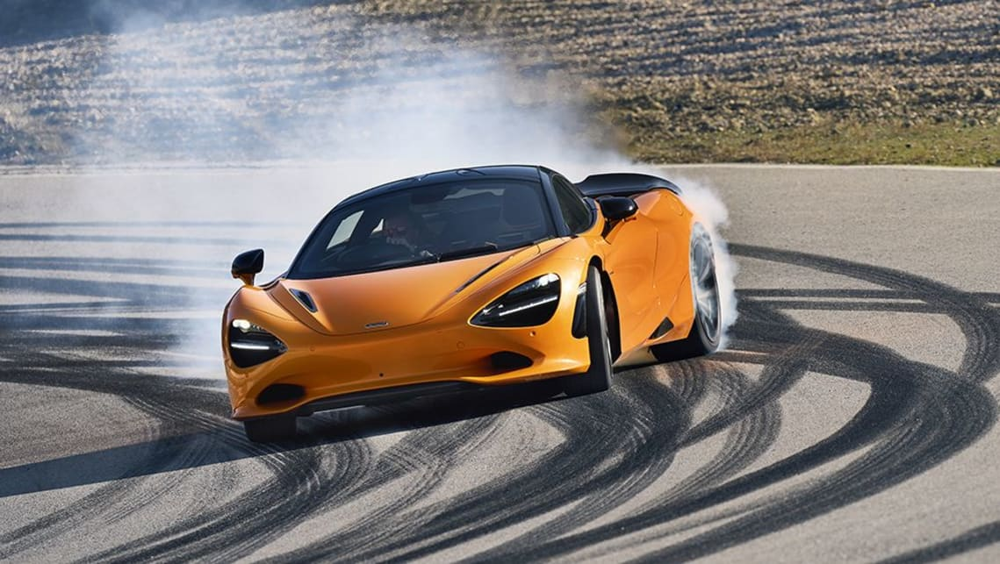

De historie van McLaren Zowel het raceteam van McLaren als de Britse autofabrikant zijn al jaren een grote speler in de race- en autowereld. Iedereen kent team McLaren met bekende ex-coureurs als Ayrton Senna, Mika Häkkinen en Lewis Hamilton. De oprichting Het raceteam van McLaren in de Formule 1 werd opgericht in 1963 en deed in 1966 voor het eerst mee aan de Grand Prix van Monaco. De Nieuw-Zeelander Bruce McLaren was al jaren actief als coureur in de F1 en besloot na enkele seizoenen van ontevredenheid over de auto zijn eigen team op te richten. Het nieuwe raceteam kreeg de naam Bruce McLaren Motor Racing en Bruce McLaren behaalde in 1968 de eerste overwinning voor het team tijdens de Grand Prix van België op Spa-Francorchamps. In de Amerikaanse Can-Am kampioenschappen heeft het team nog meer succes en zijn de coureurs oppermachtig en worden er veel meer overwinningen en podiumplaatsen behaald.